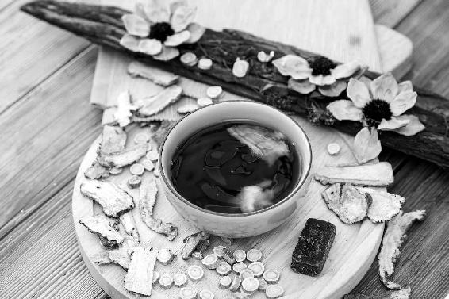

在《黄帝内经》和历代的医书里，有许多预防瘟疫的方法，都是古人抗疫的经验总结，经过长期实践证明有效的，我们可以借鉴。

《黄帝内经》说人长寿要做到五件事，其中之一就是“食饮有节”——懂得什么不宜吃、何时不宜吃。不同的病有不同的饮食禁忌，称为“五禁”。“五禁”为：肝病禁辛，心病禁咸，脾病禁酸，肾病禁甘，肺病禁苦。
食物分甘苦酸辛咸五种味道，每一种味道的功效不同。哪一个脏腑虚而导致疾病，就要忌食特定性味的食物。
这句话告诉我们两件事：
第一，古人对于通过饮食来治病是很讲究的，有精细的区分，并不是现代人想的“生病了，喝点鸡汤补充营养”之类的。这得看是什么病。
若是外感（呼吸道病毒感染，例如感冒、流感、急性肺炎），就不宜吃鸡—— “感冒吃鸡，神仙难医”！
当然，现代养殖的鸡确实也没有古代的鸡肉那么大补了，若是鸡肉含抗生素超标，吃下去有什么效果还需要研究。
第二，古人治病讲究要治本。“五脏病（肝病、心病、脾病、肾病、肺病）”指的是病的原因，不是病的部位。
例如新冠肺炎，病的部位虽然在肺，发病的主因却在脾。所以《黄帝内经》对这次疫病，既提示了在什么气候条件下会发生、发生的时间阶段，也给出了饮食起居的具体宜忌。
天然呆问：老师，每次家人生病我都不会让家人吃鸡肉和鱼肉，而是清淡饮食，不增加脾胃的负担。但是这次的新冠肺炎为什么要求患者喝鸡汤啊？尤其很多患者上吐下泻，这个时候吃这种食物真的能增强抵抗力吗？
允斌答：我不赞同肺炎患者都喝鸡汤。法国人感冒虽然是喝鸡汤，但里面要放大蒜、洋葱、胡椒粉，主要是这些调料在起作用。如果只用鸡肉是不行的，“感冒吃鸡，神仙难医”啊！
新冠肺炎是一种“湿”疫。对于这类疫病，《黄帝内经》提示我们要注意三点：
1.“食无太酸，宜甘宜淡”。
2.“勿食一切生物”。
3.“无久坐”。
因为湿伤脾，脾虚的人容易得病。适当的酸，有助消化；过度的酸，则可能伤脾胃。而且酸味收敛，平时吃可强身可防病；如果外感病时吃，却不太利于发散病气。
注意：“太酸”主要指过度的酸味。如果一样食材有酸味，但是还有其他的味道，那么要看整体的功效。比如新鲜的梅子是酸的，但是炮制成乌梅，就减少了酸味，增加了苦味，变成健胃的了。
一个食方有酸味的食材，但是有其他的食材与它搭配平衡，那么就要看这个食方整体的功效。
因为甘味和淡味是健脾的。
人在发热、咳嗽时，会感觉气虚乏力、脾胃功能变差。
甘味是养脾胃、补气的，所以这个时候宜吃甘味的食物，而且主要吃甘味中的淡味食物（甘味分为甘甜和淡味两种）。
大米、面、杂粮，这些主食都是甘味中的淡味，它们都有补脾胃的作用。所以在新冠肺炎疫情期，我给大家的预防食方中有七宝粥，并且特别强调了吃主食的重要性。
茯苓，也是甘味中的淡味，健脾又祛湿，无论是疫时防病还是平时养生，都可以常吃。
黄芪、肉桂、党参、甘草，这些能提升人体正气的药食，都是甘味的。
预防新冠肺炎，各省开出的预防方中几乎都有黄芪，用来补气固表。
国家卫健委治疗新冠肺炎推荐使用的清肺排毒汤，里面包含的张仲景的经典祛湿类方“苓桂剂”，也是以茯苓、肉桂为主药。
不要吃任何生冷的食物，这是为了保护脾胃不受寒。
对于新冠肺炎，在国家卫健委发布的诊疗方案中，第一种中成药就是藿香正气水。而藿香正气水最常用来治疗的病症就是“外感风寒，内伤饮食” ——吃了生冷食物后的肠胃型感冒。
《黄帝内经》不仅预知一种疫病发生的前提条件和时间，还预知何种饮食会加重其病情，其精准真是令人叹服。
《黄帝内经》对这类以“湿”为主的疫病还特别叮嘱：“无久坐”——不要长时间坐着。
“久坐生湿”，经常长时间地坐着，容易生湿气。新冠肺炎的主要病机正是“湿”。
“邪之所凑，其气必虚。”《黄帝内经》这句话告诉我们，病邪侵入人体，一定是人体有“虚”。哪里虚，哪里就是薄弱环节，就容易有病邪侵犯。
用一句通俗的话说，就是“苍蝇不叮无缝的蛋”。如果我们要防御外来病毒，就要补好身体的“虚”。
平时，我们也可以从自己易染什么病，染病后哪里不舒服，如何不舒服，看出自己“虚”在何处。
心虚的人，容易被“热”邪所伤；
肝虚的人，容易被“风”邪所伤；
脾虚的人，容易被“湿”邪所伤；
肺虚的人，容易被“寒”邪所伤；
肾虚的人，容易被“燥”邪所伤。
脾最怕湿气。脾虚的人，遇到湿气重的时节，抵抗力容易下降。所以在《顺时生活》（2019健康日历）一书里，我强调2019年全年都要重点祛湿。在《顺时生活：2020健康日历》一书里，我建议大家在2019年小雪到2020年小寒期间要祛湿热，从2020年大寒开始要祛寒。
现在新冠肺炎发生了，我们看到，老年人和有高血压、高脂血症、高血糖的人更易感染，他们都是身体湿气较重的人。
病毒侵入人体后，哪里有湿，哪里就容易出现症状。
所以新冠肺炎患者，几乎都舌苔厚腻，大多出现乏力、肌肉酸痛。这是脾被湿邪伤害的表现。
按照《黄帝内经》所讲，不同年份流行的咳嗽，其起因不一样，有“肺咳”（肺虚引起的咳嗽），有“脾咳”（脾虚引起的咳嗽）。
新冠肺炎属于《黄帝内经》中所说的“脾咳”，因此，我们预防这种疫病，就要特别注意健脾祛湿，保护好脾胃的元气。
《黄帝内经》讲人如何不生病：
虚邪贼风，避之有时。恬淡虚无，真气从之。精神内守，病安从来。
又讲人的长寿之道：
上古之人，其知道者，法于阴阳，和于术数；食饮有节，起居有常，不妄作劳，故能形与神俱，而尽终其天年，度百岁乃去。
解析：
“起居有常，不妄作劳”是教我们生活要有规律，不要过度劳累；“精神内守，病安从来”是教我们养心。这些都可以帮助我们预防疾病。
新冠肺炎疫情期间，尽管医护人员有口罩、防护服，还是有医护人员感染疫毒。为什么呢？救治患者非常辛苦，压力也大，吃饭想必是不香的，从而导致脾胃受损……这些都会耗损正气，导致抵抗力下降。
医护人员是为了救死扶伤而如此，宅在家里的朋友们，则完全有条件遵循《黄帝内经》的防病教导。与其焦虑地打听各种消息、熬夜抢购各种药，不如放松心情，好好吃饭，好好休息，对身体更有帮助。
人体免疫力才是特效药
在我们的身边，病毒无处不在。每隔一段时间，就会有一种病毒流行。新的病毒还会变异，真是防不胜防。
要针对每一种病毒去做防范，其实是很难的。
我们要做的是什么呢？是扎紧我们自己的“篱笆”（古人称为“藩篱”，例如：“筑长城而守藩篱”。中医用藩篱来比喻人体抵抗疾病的屏障），让身体正气充足。如果我们一身正气，就能“正气存内，邪不可干”，不管什么病毒来，我们都有底气去防御它。
已经得病的人，同样需要依靠自身抵抗力才能恢复。感冒、流感、新冠肺炎……这些病毒感染疾病都是自限性疾病，需要人体自身免疫力来战胜病毒。
每年冬春交替的时候，我的婆婆就会有感冒和不舒服的症状。年底时，她突然呕吐、腹泻，我就用老师说的香菜陈皮水喂她喝，她喝了两次就调理好了。我自己更是最大的受益者。往年每到过年的时候，我就会喉咙疼，咳嗽好长时间。自从跟着老师顺时养生，平日里多喝果菊清饮、桂芝陈皮羹，去年居然一点都没再咳嗽了。
——自然而然
我们深居简出，阻断了被传染的可能。但我们要做的不是被动地藏，而是主动地固本培元。内存正气，让邪气遁去无踪，方为上策。
——39群班长杨会贞
这次疫情，我的家人都在一线，有人防控，有人保供，出门戴上口罩，就是上战场。平时跟着老师顺时生活，疫情期间不断喝果菊清饮、加强版梅子汤。老师的香包也是全家人的护身符，一切安好。
——42群代班长杨平
想要“一身正气”，先祛除各种致病因素想
要养护身体的正气，就要先祛除体内的“邪气”，也就是各种致病因素。
湿、热、寒、燥、郁、瘀、毒……这些都是人体的致病因素。
身体上面有火，下面有寒，怎么办？
庚子年（2020年）的初之气是从大寒到惊蛰这两个月。从今日起，我们还会经历立春、雨水、惊蛰三个节气，到3月20日，也就是春分（3月20日11：50交春分节气）之前，我们的养生重点是什么呢？如何预防疫病呢？
要记住，这两个月，人体很容易有这样一个情况——上面有虚火，下面有寒湿，今年寒湿还会比往年更重，虚火比较明显；而人体中间的部位，也就是脾胃部位，会有一种寒热夹杂的感觉，非常难调理，这就是2020年我们容易生病的原因。
所以这个时候，我们要想让自己增强体质，提高抵抗力，就要调寒热。
什么叫调寒热呢？即要祛寒，又要防热，还要清虚火，所以要清我们头面的虚火。
“上火”，很多时候是指虚火
虚火怎么清呢？千万不要用寒凉的东西去清。很多人都不明白，一上火就吃清火药，这是错的！
为什么叫虚火？就是指它不是真正的火。
人们经常爱说：“我上火了。”什么是“上火”呢？
如果我们身体上面有火，下面也有火，那是上火吗？这不是上火，上下都有火，这是真正的火，是实火。
如果我们只说“上火”，这说明上面有火，下面没有火，这是虚火，不是真正的火。
什么叫“上下都有火”？
首先头面有火，表现为嗓子疼，眼睛也发红；同时下面有火，会便秘，大便非常干结，小便发黄。这样一种上下都有火的现象，才叫真正的火。
什么叫上面有火，下面没有火？
如果没有大便干结，小便发黄的症状，而仅仅是上面有火的症状，就是虚火，这种情况通常都是受寒了。
为什么出门旅行容易上火？
很多人，一出门坐飞机、坐火车后，就会觉得自己上火了。
其实错了！这不是真正的火，而是虚火，是受寒引起的。
为什么呢？在飞机、火车这样的密闭环境中，都用空调通风，我们在旅途中被这种风吹的时候，不知不觉就会受到伤害。这就是贼风，偷偷摸摸侵袭我们的风。
如果我们到户外感受大自然的风，它是非常爽快地吹过来的，如果吹得人不舒服，你马上就知道躲避它。
可在飞机、火车这样的密闭环境里，通风口、空调的风一直在吹，我们可能没多少感觉，就忘记了防范它。
《黄帝内经》里说，避风如避箭。就是说，我们躲避风要像躲避敌人射过来的箭一样。因为风来了，就像敌人向我们射了一箭，如果没有躲避，它会马上钻入我们人体，给身体带来伤害。
风是从哪里侵袭人体的呢？
“风为阳邪，上先受之”，就是指我们的头面部会先被风吹到，伤到后就会产生虚火症状。其实，这是受寒的表现，由于寒气在下，所以才把虚火逼到了我们的头面。
为什么不可吃双黄连来预防新冠肺炎？
产生虚火症状后，应该怎么办呢？此时此刻，我们不要去清热，而要引火下行，引火归元。
因为这种“火”不是坏东西，它是我们人体宝贵的阳气化的火，如果我们用清热的药把它清掉，就太可惜了！
这也就是为什么，我特别不赞成大家去抢购双黄连的原因（注：新冠肺炎疫情期间，媒体报道双黄连口服液可能对新冠肺炎有效，导致双黄连一夜之间被民众抢购一空）。
双黄连是不可以拿来预防新冠肺炎的！千万不可以！！！尤其是在立春前后，如果说你在去年冬天比较热的时候〔注：《顺时生活》（2019健康日历）曾预测2019年为暖冬〕，内热重，那喝上一两支双黄连口服液，倒也没有大碍，可以清热，但我不建议其他人喝，这个药太苦寒了！
在新冠肺炎疫情期间喝，尤其是在有虚火的时候喝，是不可以的，会让自己的身体更加寒凉，会伤到身体宝贵的阳气。
有虚火别乱吃清热药，厨房调料就能解决
所以，当我们感觉上面有火，而下面没火的时候，我们不要去清火。我们要记住这个火是身体宝贵的阳气，我们要留住它，它只是跑错了地方，我们要把这个火引回去，引到我们身体的下焦，让它回归本源，这叫“引火归元”。
引火归元，我们可以用到两样东西，第一样是肉桂，第二样是胡椒粉。
这两样都是我们厨房里的调料。虽然它们都是热性的调料，但是跟葱、姜、蒜都不一样，原因在于它们不会让我们上火，只会帮助我们引火归元，让我们身体下半部分暖暖的。
所以这两样调料，在这个时候是必不可少的，特别是肉桂。胡椒粉还有一点窜，但肉桂是非常温厚的。
我曾经在文章中写到，对于肉桂，我把它比作“中药中的君子”，它的“补”是非常温厚的。
肉桂是什么类型的中药呢？它是一味非常好的补肾阳的中药，而且它补得非常温柔，非常厚实。它大补肾阳，又不会让我们上虚火，而是引火归元。
这样一种补，就像一位君子，温柔敦厚，所以我把它称作“中药中的君子”。
肉桂是厨房里的常用调料，大家在炖肉的时候可以多放一些，甚至喝咖啡的时候，放点肉桂粉，效果都是很好的。
胡椒粉也是引火归元的。如果单用胡椒粉，它有一点儿窜，如果我们用胡椒粉来清虚火，就是用它来煮鸡蛋。
这个方子——胡椒粉煮鸡蛋，我在《回家吃饭的智慧》一书中也介绍过，只要吃这个鸡蛋就可以了。它是专门用于调理虚火上浮引起的牙痛的。
如果是虚火导致牙痛，它有一个特点，就是痛得不是很明显，牙龈也不太红肿，就是隐隐地痛。一般来说，如果是出门回来后，突然觉得有点虚火牙痛了，你就可以煮一个荷包蛋，起锅时撒一点胡椒粉进去，喝汤吃鸡蛋，一般吃一两次就见效了。这就是胡椒粉引火归元的作用。
为什么要用鸡蛋呢？鸡蛋是提气的，能够帮助胡椒粉把它的作用发挥到牙这里来。
肉桂，就比胡椒粉更温厚了，适合我们天天吃，天天都可以用肉桂。
尤其是在今年这样一个春天，比较寒的春天，我们要比往年更加倍地补我们的肾阳，暖我们的胃，所以这个时候，我们可以天天吃肉桂。
我在《顺时生活：2020健康日历》书里，给大家推荐这个方法：用肉桂、木耳加上陈皮，一起煮，再加一把枸杞子，之后加一点红糖，这就是桂芝陈皮羹。我们在整个春天，都可以用它来增强体质。
全家都可以用，特别是对中老年人好，因为这个方子原本就是我配给中老年人四季吃的。
在今年，全家人可以在春分之前吃这个方子；而我们中老年人（我自己也是中老年人）特别是体寒的人，平时也一直用这个方子，这就是中老年人日常保健的方子。
药食同源的补气药：黄芪、党参、白术、山药、甘草。
补气的食物：大枣、白扁豆、黄豆、大米、牛肉、鸡蛋。
黄芪是补正气必定会用到的中药。它能“固表”，就是加固人体的外防线，使病毒难以侵入。新冠肺炎疫情期间，有十几个省在官方发布的预防方里，都采用了黄芪来补气固表。
药食同源的健脾胃药：茯苓、陈皮、乌梅、鸡内金、赤小豆。
健脾胃的食物：莲子、荷叶、牛蒡、南瓜、各种杂粮。
脾胃之气是人体正气特别重要的一部分。有经验的医生，在给患者治病时，都会注意保护脾胃，慎用损伤胃气的药。
预防也是一样，尽量不要损伤胃气，要吃养脾胃的食物。
药食同源的补阳药：肉桂、小茴香等。
补阳的食物：香菜、香椿、韭菜、羊肉等。
各种辛香、温阳、理气的药食有助于升发阳气，阳气足了，病邪自然退散。
所以我特别不赞成过度使用清热解毒的药来抗病毒，比如板蓝根、双黄连这些寒凉药，治病用是很好的，但是没事的时候吃，苦寒伤阳气，人体正气都变弱了，怎么能防范病毒呢？
主食是养脾胃和补气的。在疫情期，不要盲目节食，特别是不要少吃主食。
在补气的食物中，大米的力量很强大，米汤是“穷人的人参汤”。
治疗新冠肺炎的清肺排毒汤，服用后每次要喝大米汤半碗到一碗。这是来自医圣张仲景的妙法。在他的巨著《伤寒论》中，大米也是一味药，有七个药方用到它。
其他的粮食，也都各有其养脾胃和补益的功效。比如多吃各种杂粮，对于增强体质、提升正气是很重要的。
黄帝曰：“余闻五疫之至，皆相染易，无问巨细，病状相似，不施救疗，如何可得不相移易者？”
岐伯曰：“不相染者，正气存内，邪不可干，避其毒气，天牝从来。”
——《黄帝内经》
很多人都知道“正气存内，邪不可干”，却不知道《黄帝内经》的原文后面还有两句：“避其毒气，天牝从来。”
这一段黄帝和岐伯的对话，说明古人早就知道疫病是有传染性的，得病的人会有相似的症状。而正气充足（免疫力强）、注意避免病毒通过鼻子进入体内的人，就不会受感染。
“天牝”是什么呢？就是鼻子。《景岳全书》里说：“鼻为肺窍，又曰天牝。乃宗气之道，而实心肺之门户。”这说明鼻子是人体非常重要的气道和门户。
鼻子里面的鼻黏膜，是人体免疫系统的第一道防线。它能产生抗体，对抗外来的病菌。
如何避免“毒”从鼻入呢？古人教给我们三种方法：
1.闻香抗毒；2.隔离避毒；3.保持鼻孔洁净。
闻香抗毒
古人很善于以香防病，他们把芳香的中药点燃，在房间里熏香，用香料做成浴包洗浴，或者做成香包随身佩戴……用这些方法来避瘟疫。
中药的药香能化浊、化湿、抗病毒，还能刺激人体鼻黏膜产生抗体。
隔离避毒
古人早就发现疫病会传染，需要“隔离”。
古代有专门隔离患者的场馆，称为“疠所”“六疾馆”，用来给传染患者居住。
而且古人对于隔离的时间要求也很严格。晋代的时候，哪位朝廷官员若是家族里有超过三人染病，那么，这个官员虽然身体没病，但百日内都不允许进宫上朝。
这说明古人也知道病毒感染人有潜伏期，即使不发病的人也能传播病毒，所以一定要注意避开以下传染源——
• 已经患病的人：要注意有些病即使好转后，也可能还有传染性，比如新冠肺炎；另外，流感患者在一星期之内都可能有传染性，婴幼儿和体弱的人时间更长。
• 隐性感染的人：接触过患者的人，即使没有发病也可能携带病毒。
• 受感染的动物。
保持鼻孔洁净
在疫情期，大家会抢购口罩，而平时，却疏于对鼻子的防护。
鼻子是病毒进入人体的主要关口。除了吸入飞沫，生活中常见的还有用手摸鼻子，导致病毒进入人体的情况。
每年，全世界有 350 万以上的孩子因腹泻和肺炎夭折。其中很大一部分的感染是通过手来传播，比如，不洗手就拿东西吃，不洗手就摸鼻子。
人有下意识摸鼻子的习惯动作。如果手不干净，摸鼻子时就会将病毒带入人体。所以勤洗手非常重要，而且光是用清水还不够，要用肥皂，用加了芳香杀菌中药的更好。
古代医生去有疫病的人家看病，会用芝麻油涂鼻孔，防止染毒。
我们现在有效果更好的酒精。在流行病季节，回家后，马上用酒精消毒鼻孔，能很好地预防得病。
有一年，北京刮起沙尘暴，空气很脏。我儿子和他的同学一起顶着大风回家。到家后，我马上用酒精给他消毒鼻孔。第二天，他安然无恙，他的同学因为没有消毒，却发热了。
疫情暴发，我先是自制了香囊，家里人人手一个，床上、车上、随身都配备了，妥妥的防疫神器。幽幽药香，宝宝也爱，还有促进安睡的作用。腊月二十八时，我又到药店买了几大袋药材，根据老师的指导，春节期间少出门、不串门，隔三岔五就煲果菊清饮，清肺消积。由于市面上的防护用品太紧缺了，口罩、消毒液都很难买到，我们家就用大蒜酵素消毒，每日出门买菜回家，就用其喷外套、双手、鞋子。口罩反复省着用，太阳晒，热风吹。立春开始，继续顺时生活吃春饼、喝花茶。
——42群姑灵精乖
认真白白问：陈老师，我家孩子三岁，有鼻炎，最近一躺下就吸鼻子，已经两天睡不着了，很痛苦，昨天也去挂专家号，医生建议用生理盐水喷鼻子，照样不管用。请问陈老师有什么好方法滋润鼻腔吗？
允斌答：如果是萎缩性鼻炎，鼻腔很干燥的话，可以用《回家吃饭的智慧》一书中介绍的白萝卜汁涂抹鼻腔的方法。
很多时候生病，是自找的
“虚邪贼风，避之有时”，这句话出自《黄帝内经》，意思是四时不正之气都能伤人，需要适时地避开。
其实我们很多时候生病，都是自己找的，本来是可以不生病的。
我看到现在很多年轻人，之所以经常发热、咳嗽、感冒，甚至患肺炎，往往就是因为少穿了一件衣服，或者吹了风，或者是在坐火车、坐飞机时，没有关掉旁边的通风口而受风、受寒生的病。
当我们受风、受寒时，身体的抵抗力就会大大降低，遇到病毒就更容易感染。
我住在北京，冬天有暖气，室温16 ℃左右，但我还是会穿着薄棉袄，还穿了棉裤、高帮的加绒鞋。为什么穿这么多呢？并不是我怕冷，而是我希望自己暖暖的。
很多人穿衣服，是以不感觉明显的冷为标准，其实不够。
要穿多少才算暖呢？以不感觉热为标准。如果再加一件衣服就会有点发热，那么此时穿的才算够暖了。
我们要保持自己的身体一直暖暖的，才不容易被病毒侵袭。
前面讲全身尽量穿得暖，这是成年人的做法。小孩有一点不同。
“若要小儿安，三分饥与寒。”小孩子不要穿太厚实，避免“捂”出病来，但是小孩也要防风寒。
怎么防呢？7岁以下的孩子，一定要保护好头部，使其不要受风。
对于7岁以上的人来说，是“寒从脚下起”，冬天务必要穿暖和的鞋子，不要冻脚，产妇坐月子不能穿露脚后跟的鞋。其实普通人也应该这样做。
我冬天在家不会穿普通拖鞋，而是穿高帮的家居鞋，保护好脚后跟，使其不受凉。
而7岁以下的孩子，脚是不怕凉的。我儿子小时候，冬天光着脚在家里跑都没事，但是出门，一定要给他戴个帽子，因为他们最怕头部受风。
婴儿在家也要注意。冬天屋里凉或者开窗通风时，也要给孩子戴上帽子，薄薄的一层都可以，挡住风就行。
当然，7岁以上的人，也是要注意头部保暖和防风的。
中医认为，导致人生病的外界因素有六种，称为“六淫”：风、寒、暑、湿、燥、火。风排在第一个，为“六淫”之首，称为“百病之长”。
《黄帝内经》：“风者，百病之长也，至其变化乃生他病也。”就是说风侵袭人体为各种疾病的开端。
所以“圣人避风如避箭”——箭破空而来，令人猝不及防，在顷刻之间伤人，这就是风的特点。懂医道的人，会时刻警惕风的袭击。
如果敌人在明处还好办，最怕的是“暗箭伤人”，也就是“贼风”。
对于现代人来说，什么样的风是“贼风”呢？
办公室里，飞机、火车、汽车上空调送风口的风，就属于贼风，在我们不知不觉中伤人。所以不少人有这样的经历：长途旅行之后，容易出现感冒、牙痛、头痛、咽喉不适等症状，这往往就是路上受贼风所致。
如何避开“贼风”？
1.卧室的床，最好不要正对门口，避免贼风从门缝进来。
2.除非天气很热，睡觉时不要让打开的窗户正对自己头部。
3.在办公室，不要坐在空调送风口下面，如果不能调整位置，要用披肩、围巾等防护。
4.在飞机上，可以将头顶或身旁的送风口关闭。
5.开车时，最好将一条披肩或围巾搭在膝盖上。这是我个人多年来养成的习惯，也在讲课时教给了很多朋友。别小看这个小小的动作，它不仅可以帮助我们预防膝关节炎，也对我们养护心脏颇有好处，因为“膝与心相通”，风寒伤膝盖，日积月累也会伤及心阳。
我有一个常年养成的小习惯——外出时，喜欢佩戴围巾。即使天很热，也会在随身包里放一条备用。
这不是为了装饰，而是为了保护好人体的“咽喉要道”。
咽喉部位是人体内外之间的一道关卡。咽，下接食管，通于胃；喉，下连气管，通于肺。这个部位皮肤很薄，容易受寒。一旦受寒，就很容易生病。一生病，往下牵累肺和胃，乃至五脏；往上波及五官，乃至大脑。
如果不注意保护咽喉，就可能“千里之堤，溃于蚁穴”，先是小小的咽喉不适，慢慢发展为慢性病。很多人的病就是这样来的。
如果时刻保护好咽喉，它就能“一夫当关，万夫莫开”，成为我们阻挡疾病的一道屏障。
一条小小的围巾，就可以帮助我们给咽喉保暖，加强这道屏障。
戴围巾还有一个好处——遇到人多拥挤、空气污浊的环境，或旁边有人咳嗽、打喷嚏时，我会立即用围巾掩住口鼻，防止飞沫传播病毒。
平时没有疫情时，大家出门不一定会随时戴口罩，一条围巾可以起到应急的作用。
其实古人也早就知道衣服上会沾染病毒，会把患者的衣服放在甑子上蒸，利用蒸汽来消毒。
我家平时的习惯是回家后马上换掉全身上下的衣服，不把外面的病菌带回家。
冬天的羽绒服和厚外套不方便每日水洗，那就放在阳台上晒太阳、吹风，让它自然消毒。
新冠肺炎疫情期间，发生了很多一家人互相传染的情况。有些家庭，只是过年期间聚在一起吃了个饭，就集体染病了。
我给大家分享一下我家在这段时间吃饭的方式，用一个成语来打比方，就是“退避三舍”——家人分散坐，相隔三米，各据一方，每个人都退到靠墙的地方坐着，需要取菜的时候，过来取一点，有点像西方吃自助餐，然后再退到各自的座位吃。这样既可以温馨地一起吃饭，又不用担心飞沫的传播。
这是特殊时期的方法。其实在平时，我们吃饭同样要防止交叉感染，这样可以保护全家人少得流感、手足口病、胃病等各种常见病。
夹菜用公筷，进食用个人专用餐具
去年，儿子和他的几个小伙伴发起了一个公益健康宣传项目，叫“公筷母匙”，倡导大家在用餐时用公筷、公勺。
经过孩子们的前期调查，我发现，直到如今，还是有很多家庭没有使用公筷的习惯。
中国人胃幽门螺杆菌感染率高达50%以上，儿童感染率也很高。
如果用公筷，可以极大地减少感染的概率。
我家是这样做的：
不仅用公筷、公勺，碗和盘子也区分公用与私用，每个人有自己的专用餐具（碗、盘、筷子和勺子），包括经常来访的亲友也各有一套。
公筷、公勺、公碗、公盘，与个人的专用餐具用明显的颜色和款式区分，这样吃饭时不容易混淆、拿错。
平时饭后，每个人自己洗自己的碗筷，与公用餐具分开洗。
聚餐后，用过的餐具用高温蒸煮1小时消毒。
取食和进食时不说话
母亲小时候，家里对她的教育是“食不言，寝不语”。
到现在她也有这个习惯，吃饭的时候不喜与人聊天，认真地细嚼慢咽。
吃东西的时候不说话，可以专注进食，有助于消化，也能有效防止飞沫传播病毒。古人传下来的这个礼俗真是很有智慧。
当然，现代人太忙，难得聚在一起，吃饭时间也是交流时间，聊聊天，保持心情愉快，也挺好的。
即便如此，在两个时候应不说话：
第一，盛饭菜的时候不说话。一边盛饭菜一边说话，飞沫很容易溅到饭菜上，其他人再取食的时候，就会被感染。
第二，嘴里有食物的时候不说话，这样可以专心感受食物的味道。
1月23日是年二十九，我们一家四口参加亲戚家的团年饭，而他儿子正好从武汉出差回来。我们回家后马上消毒衣服、鞋物，用兰汤洗澡。用鱼腥草陈皮煮水，喝完后，戴上避疫香包各人分房睡。从24号至今没出过门。以下茶方轮换喝：鱼腥草陈皮水、橘香梅子汤（没有鲜橘皮，用了2019年的新皮）、老荠菜水、香菜陈皮水，补肺气、清肺热、清心火、健脾胃；用柿子饼、川红橘饼、无花果、苹果、南杏仁煮了水果茶，隔一两天喝一次。每餐煮饭时都会多放点水，水开后把米汤盛出，每人喝半碗，这样每日能喝上一碗米汤。后来听了老师两场抗疫直播，感慨这么多年真的跟出默契来了，基本措施都做到了，所以今天刚好一个月，我们平安度过，喝米汤还喝出了好气色。
——倩（广东）